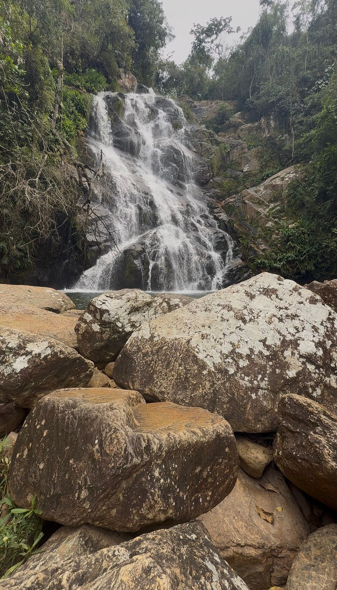
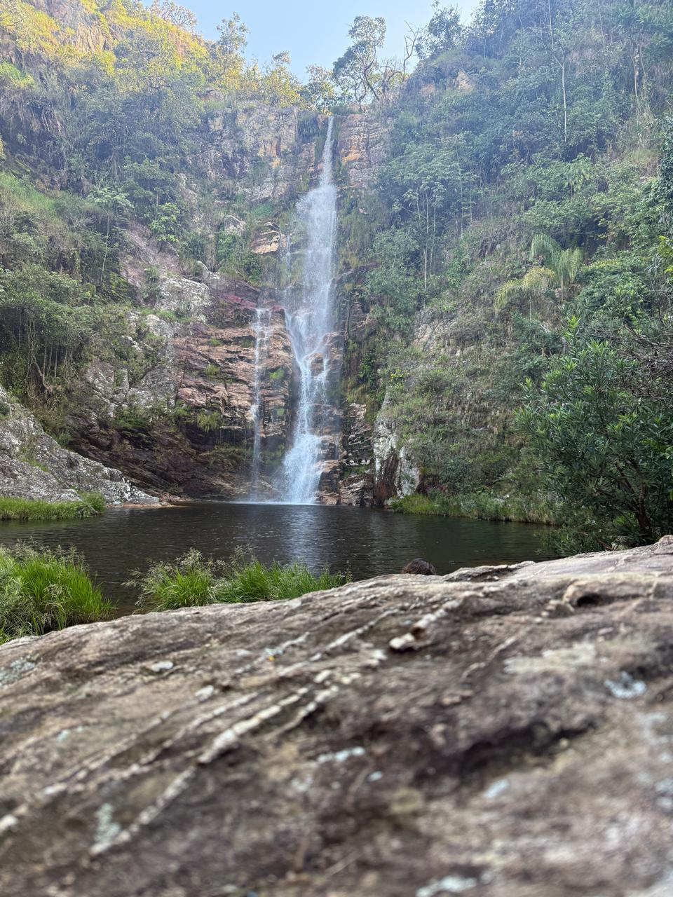

"O lugar é lindo e o site nos auxiliou em nosso roteiro. Muito intuitivo!"
Vitória Vasconcelos
Viajante entusiasmada




Chinela → Lavrinha → Mirante da Igrejinha → Casca d’Anta (parte baixa)
Parte alta → Curral de Pedras → Nascente do São Francisco → Roça na Cidade → Velho Chico
Cerradão → Cachoeira do Nego (manhã) → Queijaria Talisma → Taberna Zagaia
Chinela → Lavra → Lavrinha → pernoite em São José do Barreiro
Casca d’Anta (parte baixa) → Mirante da Mineradora → Mirante da Pedra
Parte alta → Curral de Pedras → Nascente do São Francisco → Roça na Cidade → Velho Chico
Cerradão → Cachoeira do Nego (manhã) → Queijaria Talisma → Taberna Zagaia
"O lugar é lindo e o site nos auxiliou em nosso roteiro. Muito intuitivo!"
"Conseguimos planejar cada detalhe da nossa viagem de 15 dias de forma prática. Nota 10!"